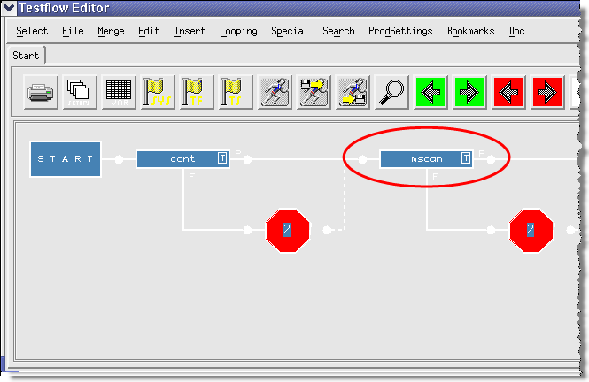
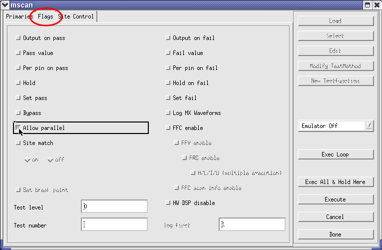
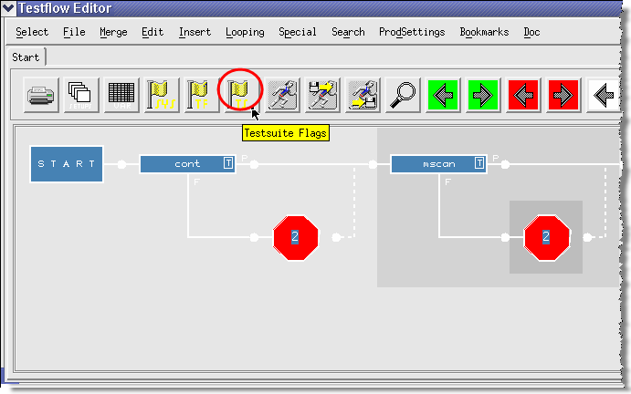
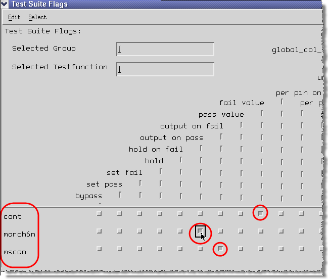

Test suite flags
Test suite Flags (single test suite)
- Double-click a single test suite in the main window of Testflow Editor.

- A window with the name of the test suite opens. Click the Flags tab,
and configure the flags by selecting the appropriate buttons:

Some test suite flags have specific consequences for HSM test methods:
- Output on pass and Output on fail: If both flags are
set to off, there is no value or per-pin reporting.
For a description of all test suite flags, see Usage of the testsuite flags.
- Output on pass and Output on fail: If both flags are
set to off, there is no value or per-pin reporting.
Test suite flags (all test suites of a test flow)
- To get an overview and to set the test suite flags of all test suites belonging to one test
flow, you have to enter the Testflow Editor and click the Test Suite Flags button.

- A window opens in which you can set flags for each test suite (cont, march6n and mscan).

Functional changes
- Introduced before SmarTest 6.3.2